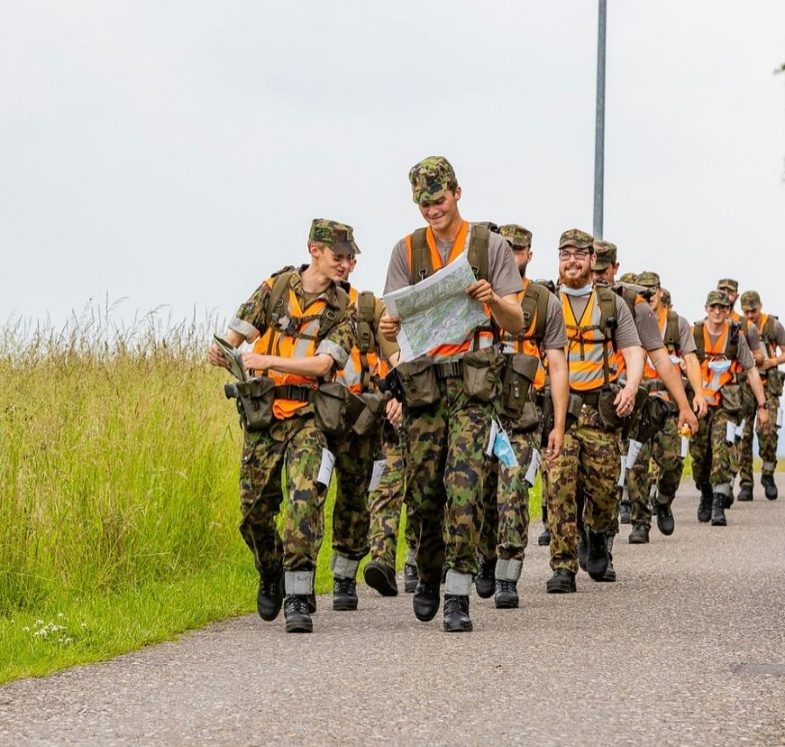
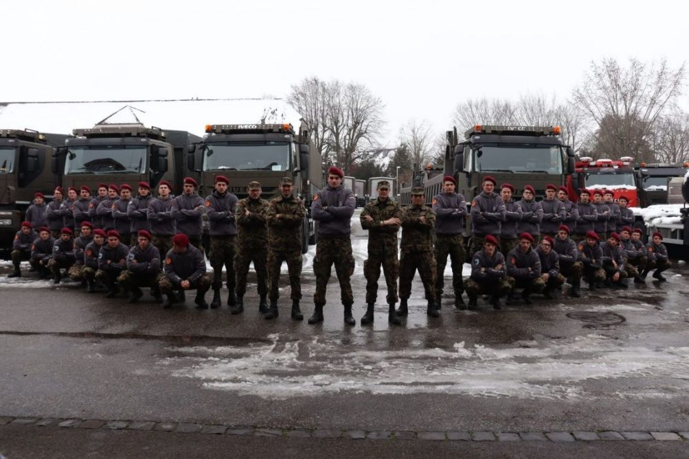

Militär
Vom Motorfahrer zum Kommandant-Stellvertreter
Werdegang
Nach der Lehre absolvierte ich die Rekrutenschule als Motorfahrer in Frauenfeld und wurde für eine Kaderposition vorgeschlagen. Nach der Berufsmaturität folgten die Unteroffiziersschule und die Offiziersschule in Bern, wo ich nach 15 Wochen zum Leutnant befördert wurde.
Im praktischen Dienst in Wangen führte ich meinen Zug mit 44 Unterstellten. Im WK war ich zu Beginn bei den Richtstrahlpionieren als Transportoffizier eingeteilt. Nach zwei WK wurde ich zum Kommandant-Stellvertreter ernannt und gleichzeitig zum Oberleutnant befördert.
- 01.2019 – 05.2019Rekrutenschule als Motorfahrer, Frauenfeld
- 08.2020 – 12.2020Unteroffiziersschule
- 03.2021 – 02.2022Offiziersschule, Bern – Beförderung zum Leutnant
- Praktischer DienstZugführer mit 44 Unterstellten, Wangen
- WKTransportoffizier bei den Richtstrahlpionieren
- heuteKommandant-Stellvertreter, Oberleutnant

